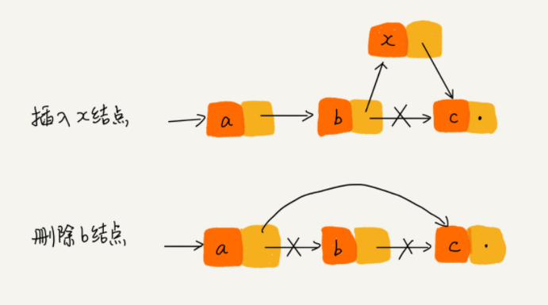

🔴复杂度分析
时间复杂度
T(n) = O( f(n) )
T(n) ：表示代码执行的时间；
n ：表示数据规模的大小；
f(n) ：表示每行代码执行的次数总和。因为这是一个公式，所以用 f(n) 来表示。
O ：表示代码的执行时间 T(n) 与 f(n) 表达式成正比。
大 O 时间复杂度实际上并不具体表示代码真正的执行时间，而是表示代码执行时间随数据规模增长的变化趋势，所以，也叫作渐进时间复杂度（asymptotic time complexity），简称时间复杂度。
时间复杂度分析
💡只关注循环执行次数最多的一段代码
💡加法法则：总的时间复杂度就等于量级最大的那段代码的时间复杂度
- 如果 T1(n)=O( f(n) )，T2(n)=O( g(n) )；
- 那么 T(n)=T1(n)+T2(n)=max{ O( f(n) ), O( g(n) ) } = O( max( f(n), g(n) ) ).
💡乘法法则：嵌套代码 的复杂度等于嵌套 内外 代码复杂度的 乘积
- 如果 T1(n)=O(f(n))，T2(n)=O(g(n))；
- 那么 T(n)=T1(n)·T2(n)=O(f(n))·O(g(n))=O(f(n)·g(n)).
几种常见时间复杂度实例分析
O(1)
**一般情况下，只要算法中不存在循环语句、递归语句，即使有成千上万行的代码，其时间复杂度也是Ο(1)**。
O(logn)、O(nlogn)
i=1;
while (i <= n) {
i = i * 2;
}我们只要能计算出这行代码被执行了多少次，就能知道整段代码的时间复杂度。
从代码中可以看出，变量 i 的值从 1 开始取，每循环一次就乘以 2。
得到：2^x=n
求得：x=log2(n)
所以，这段代码的时间复杂度就是 O(log2(n))。
实际上，不管是以 2 为底、以 3 为底，还是以 10 为底，我们可以把所有对数阶的时间复杂度都记为 **O(logn)**。
如果一段代码的时间复杂度是 O(logn)，我们循环执行 n 遍，时间复杂度就是 O(nlogn) 了
O(m+n)、O(m*n)
代码的复杂度由两个数据的规模来决定：
int cal(int m, int n) {
int sum_1 = 0;
int i = 1;
for (; i < m; ++i) {
sum_1 = sum_1 + i;
}
int sum_2 = 0;
int j = 1;
for (; j < n; ++j) {
sum_2 = sum_2 + j;
}
return sum_1 + sum_2;
}由于无法事先评估 m 和 n 谁的量级大，所以不能简单地利用加法法则，省略掉其中一个。上面代码的时间复杂度表示为： **O(m+n)**。
空间复杂度分析
void print(int n) {
int i = 0;
int[] a = new int[n];
for (i; i <n; ++i) {
a[i] = i * i;
}
for (i = n-1; i >= 0; --i) {
print out a[i]
}
}第 2 行代码中，申请了一个空间存储变量 i，但是它是常量阶的，跟数据规模 n 没有关系，所以可以忽略。第 3 行申请了一个大小为 n 的 int 类型数组，除此之外，剩下的代码都没有占用更多的空间，所以整段代码的空间复杂度就是 **O(n)**。
小结
复杂度也叫渐进复杂度，包括时间复杂度和空间复杂度，用来分析算法执行效率与数据规模之间的增长关系，可以粗略地表示，越高阶复杂度的算法，执行效率越低。
常见的复杂度并不多，从低阶到高阶有：O(1)、O(logn)、O(n)、O(nlogn)、O(n2 )。
浅析最好、最坏、平均、均摊时间复杂度。
数组
数组（Array）是一种线性表数据结构。它用一组连续的内存空间，来存储一组具有相同类型的数据。
线性表（Linear List）
- 线性表就是数据排成像一条线一样的结构。
- 每个线性表上的数据最多只有前和后两个方向。
- 除了数组，链表、队列、栈等也是线性表结构。
连续的内存空间和相同类型的数据
因为这两个限制，它有了一个堪称“杀手锏”的特性：“随机访问”。
但这两个限制也让数组的很多操作变得非常低效，比如要想在数组中删除、插入一个数据，为了保证连续性，就需要做大量的数据搬移工作。
下标从0开始？
当计算机需要随机访问数组中的某个元素时，它会首先通过下面的寻址公式，计算出该元素存储的内存地址：
a[i]_address = base_address + i * data_type_size
//其中 data_type_size 表示数组中每个元素的大小;
//内存块的首地址为 base_address。下标”最确切的定义应该是“偏移（offset）”。如果用 a 来表示数组的首地址，a[0] 就是偏移为 0 的位置，也就是首地址，a[i] 就表示偏移 i 个 data_type_size 的位置。
但是，如果数组从 1 开始计数，那我们计算数组元素 a[k] 的内存地址就会变为：
a[k]_address = base_address + (k-1)*type_size每次随机访问数组元素都多了一次减法运算，对于 CPU 来说，就是多了一次减法指令。
数组作为非常基础的数据结构，通过下标随机访问数组元素又是其非常基础的编程操作，效率的优化就要尽可能做到极致。所以为了减少一次减法操作，数组选择了从 0 开始编号，而不是从 1 开始。
Java ArrayList
ArrayList 类是一个可以动态修改的数组，与普通数组的区别就是它是没有固定大小的限制，我们可以添加或删除元素。
ArrayList 继承了 AbstractList ，并实现了 List 接口。
ArrayList 类位于 java.util 包中，使用前需要引入它，语法格式如下：
import java.util.ArrayList; // 引入 ArrayList 类
ArrayList<E> objectName =new ArrayList<>(); // 初始化- E: 泛型数据类型，用于设置 objectName 的数据类型，只能为引用数据类型。
- objectName: 对象名。
如果我们要存储其他类型，而 <E> 只能为引用数据类型，这时我们就需要使用到基本类型的包装类。
基本类型对应的包装类表如下：
| 基本类型 | 引用类型 |
|---|---|
| boolean | Boolean |
| byte | Byte |
| short | Short |
| int | Integer |
| long | Long |
| float | Float |
| double | Double |
| char | Character |
Java ArrayList 常用方法列表如下：
| 方法 | 描述 |
|---|---|
| 🔴add() | 将元素插入到指定位置的 arraylist 中 |
| addAll() | 添加集合中的所有元素到 arraylist 中 |
| 🔴clear() | 删除 arraylist 中的所有元素 |
| clone() | 复制一份 arraylist |
| contains() | 判断元素是否在 arraylist |
| 🔴get() | 通过索引值获取 arraylist 中的元素 |
| indexOf() | 返回 arraylist 中元素的索引值 |
| removeAll() | 删除存在于指定集合中的 arraylist 里的所有元素 |
| 🔴remove() | 删除 arraylist 里的单个元素 |
| 🔴size() | 返回 arraylist 里元素数量 |
| 🔴isEmpty() | 判断 arraylist 是否为空 |
| subList() | 截取部分 arraylist 的元素 |
| 🔴set() | 替换 arraylist 中指定索引的元素 |
| 🔴sort() | 对 arraylist 元素进行排序 |
| toArray() | 将 arraylist 转换为数组 |
| 🔴toString() | 将 arraylist 转换为字符串 |
| 🔴forEach() | 遍历 arraylist 中每一个元素并执行特定操作 |
💡有些时候，用数组会更合适些：
Java ArrayList 无法存储基本类型，比如 int、long，需要封装为 Integer、Long 类，而 Autoboxing、Unboxing 则有一定的性能消耗，所以如果特别关注性能，或者希望使用基本类型，就可以选用数组；
如果数据大小事先已知，并且对数据的操作非常简单，用不到 ArrayList 提供的大部分方法，也可以直接使用数组。
当要表示多维数组时，用数组往往会更加直观。比如 Object[][] array；而用容器的话则需要这样定义：ArrayList<ArrayList> array。
总结：对于业务开发，直接使用容器就足够了，省时省力。毕竟损耗一丢丢性能，完全不会影响到系统整体的性能。但如果是做一些非常底层的开发，比如开发网络框架，性能的优化需要做到极致，这个时候数组就会优于容器，成为首选。
小结
数组可以说是最基础、最简单的数据结构了。数组用一块连续的内存空间，来存储相同类型的一组数据，最大的特点就是支持随机访问，但插入、删除操作也因此变得比较低效，平均情况时间复杂度为 O(n)。在平时的业务开发中，我们可以直接使用编程语言提供的容器类，但是，如果是特别底层的开发，直接使用数组可能会更合适。
链表
LRU 缓存淘汰算法
常见的三种缓存淘汰策略：
先进先出策略 FIFO（First In，First Out）
最少使用策略 LFU（Least Frequently Used）
最近最少使用策略 LRU（Least Recently Used）
链表结构
链表不需要一块连续的内存空间，它通过“指针”将一组零散的内存块串联起来使用。
三种最常见的链表结构：
- 单链表
- 双向链表
- 循环链表
我们把内存块称为链表的“结点”。为了将所有的结点串起来，每个链表的结点除了存储数据之外，还需要记录链上的下一个结点的地址。我们把这个记录下个结点地址的指针叫作后继指针 next。
我们习惯性地把第一个结点叫作头结点，把最后一个结点叫作尾结点。
头结点用来记录链表的基地址。有了它，我们就可以遍历得到整条链表。
尾结点特殊的地方是：指针不是指向下一个结点，而是指向一个空地址 NULL，表示这是链表上最后一个结点。
从下图中我们可以看出，针对链表的插入和删除操作，我们只需要考虑相邻结点的指针改变，所以对应的时间复杂度是 O(1)。

链表需要根据指针一个结点一个结点地依次遍历，直到找到相应的结点。所以链表随机访问的性能没有数组好，需要 O(n) 的时间复杂度。
循环链表是一种特殊的单链表。它跟单链表唯一的区别就在尾结点。循环链表的尾结点指针是指向链表的头结点。
优点：
- 从链尾到链头比较方便。
- 当要处理的数据具有环型结构特点时，就特别适合采用循环链表。
- 比如著名的约瑟夫问题。
双向链表：支持两个方向，每个结点不止有一个后继指针 next 指向后面的结点，还有一个前驱指针 prev 指向前面的结点。
虽然两个指针比较浪费存储空间，但可以支持双向遍历，这样也带来了双向链表操作的灵活性。
从结构上来看，双向链表可以支持 O(1) 时间复杂度的情况下找到前驱结点。双向链表在某些情况下的插入、删除等操作都要比单链表简单、高效。
在实际的软件开发中，从链表中删除一个数据无外乎这两种情况：
- 删除结点中“值等于某个给定值”的结点；
- 删除给定指针指向的结点。
对于第一种情况，不管是单链表还是双向链表，为了查找到值等于给定值的结点，都需要从头结点开始一个一个依次遍历对比，直到找到值等于给定值的结点，删除之。
- 尽管单纯的删除操作时间复杂度是 O(1)，但遍历查找的时间是主要的耗时点，对应的时间复杂度为 O(n)。根据时间复杂度分析中的加法法则，删除值等于给定值的结点对应的链表操作的总时间复杂度为 O(n)。
对于第二种情况，我们已经找到了要删除的结点，但是删除某个结点 q 需要知道其前驱结点，而单链表并不支持直接获取前驱结点，所以，为了找到前驱结点，我们还是要从头结点开始遍历链表，直到 p->next=q，说明 p 是 q 的前驱结点。
- 对于双向链表来说，这种情况就比较有优势了。因为双向链表中的结点已经保存了前驱结点的指针，不需要像单链表那样遍历。所以，针对第二种情况，单链表删除操作需要 O(n) 的时间复杂度，而双向链表只需要在 O(1) 的时间复杂度内就搞定了！
- 如果想在链表的某个指定结点前面插入一个结点，双向链表比单链表有很大的优势。双向链表可以在 O(1) 时间复杂度搞定，而单向链表需要 O(n) 的时间复杂度。
Java LinkedHashMap 的实现原理，就用到了双向链表这种数据结构。
把这两种链表整合在一起：双向循环链表。
如何基于链表实现 LRU 缓存淘汰算法？
维护一个有序单链表，越靠近链表尾部的结点是越早之前访问的。当有一个新的数据被访问时，我们从链表头开始顺序遍历链表。
如果此数据之前已经被缓存在链表中了，我们遍历得到这个数据对应的结点，并将其从原来的位置删除，然后再插入到链表的头部。
如果此数据没有在缓存链表中，又可以分为两种情况：
- 如果此时缓存未满，则将此结点直接插入到链表的头部；
- 如果此时缓存已满，则链表尾结点删除，将新的数据结点插入链表的头部。
写链表代码的技巧
理解指针或引用的含义
将某个变量赋值给指针，实际上就是将这个变量的地址赋值给指针，或者反过来说，指针中存储了这个变量的内存地址，指向了这个变量，通过指针就能找到这个变量。
在编写链表代码的时候，我们经常会有这样的代码：
p->next = q
// 这行代码是说，p 结点中的 next 指针存储了 q 结点的内存地址还有一个更复杂的，也是写链表代码经常会用到的：
p->next = p->next->next
// 这行代码表示，p 结点的 next 指针存储了 p 结点的下下一个结点的内存地址警惕指针丢失和内存泄漏
C 语言，内存管理是由程序员负责的，如果没有手动释放结点对应的内存空间，就会产生内存泄露。
所以，我们插入结点时，一定要注意操作的顺序，要先将待插入结点 x 的 next 指针指向结点 b，再把结点 a 的 next 指针指向结点 x，这样才不会丢失指针，导致内存泄漏。
x->next = p->next; // 将 x 的结点的 next 指针指向 b 结点；
p->next = x; // 将 p 的 next 指针指向 x 结点；删除链表结点时，也一定要记得手动释放内存空间。
当然，对于像 Java 这种虚拟机自动管理内存的编程语言来说，就不需要考虑这么多了。
利用哨兵简化实现难度
针对链表的插入、删除操作，需要对插入第一个结点和删除最后一个结点的情况进行特殊处理。
如果我们引入哨兵结点，在任何时候，不管链表是不是空，head 指针都会一直指向这个哨兵结点。我们也把这种有哨兵结点的链表叫带头链表。相反，没有哨兵结点的链表就叫作不带头链表。

重点留意边界条件处理
检查链表代码是否正确的边界条件：
- 如果链表为空时，代码是否能正常工作？
- 如果链表只包含一个结点时，代码是否能正常工作？
- 如果链表只包含两个结点时，代码是否能正常工作？
- 代码逻辑在处理头结点和尾结点的时候，是否能正常工作？
举例画图，辅助思考
多写多练
5 个常见的链表操作：
- 单链表反转 乐扣206
- 原理图：
- 原理图：

/**
* Definition for singly-linked list.
* public class ListNode {
* int val;
* ListNode next;
* ListNode() {}
* ListNode(int val) { this.val = val; }
* ListNode(int val, ListNode next) { this.val = val; this.next = next; }
* }
*/
class Solution {
public ListNode reverseList(ListNode head){
ListNode newEle = null;
ListNode curr = head;
while(curr != null){
ListNode nextEle = curr.next;
curr.next = newEle;
newEle = curr;
curr = nextEle;
}
return newEle;
}
}
/**
输入
[1,2,3,4,5]
输出
[5,4,3,2,1]
预期结果
[5,4,3,2,1]
*/- 链表中环的检测 力扣141
- 原理（快慢指针解法）
- 快指针每次走2步，慢指针每次走1步。如果快指针已经走到了
NULL，那自然不存在环，如果快指针遇到了慢指针，说明快慢指针都在环里兜圈，存在环。
- 快指针每次走2步，慢指针每次走1步。如果快指针已经走到了
- 原理（快慢指针解法）
/**
* Definition for singly-linked list.
* class ListNode {
* int val;
* ListNode next;
* ListNode(int x) {
* val = x;
* next = null;
* }
* }
*/
//不正经解法
public class Solution {
public boolean hasCycle(ListNode head) {
double test = 1e4;
while(test > 0 && head != null){
head = head.next;
test--;
}
if(head == null)
return false;
else
return true;
}
}
//正统解法
public class Solution {
public boolean hasCycle(ListNode head) {
ListNode h1 = head, h2 = head;
while(h2 != null && h2.next != null){
h1 = h1.next;
h2 = h2.next.next;
if(h1 == h2){
return true;
}
}
return false;
}
}
/**
输入
[3,2,0,-4]
1
输出
true
预期结果
true
*/- 两个有序的链表合并 力扣21
- 原理（迭代法）
- 当 l1 和 l2 都不是空链表时，判断 l1 和 l2 哪一个链表的头节点的值更小，将较小值的节点添加到结果里，当一个节点被添加到结果里之后，将对应链表中的节点向后移一位。
- 原理（迭代法）
class Solution {
public ListNode mergeTwoLists(ListNode l1, ListNode l2) {
ListNode preHead = new ListNode(-1);
ListNode pre = preHead;
while(l1 != null && l2 != null){
if(l1.val <= l2.val){
pre.next = l1;
l1 = l1.next;
}else{
pre.next = l2;
l2 = l2.next;
}
pre = pre.next;
}
pre.next = (l1 == null) ? l2 : l1;
return preHead.next;
}
}
/**
输入
[1,2,4]
[1,3,4]
输出
[1,1,2,3,4,4]
预期结果
[1,1,2,3,4,4]
*/- 删除链表倒数第 n 个结点 力扣19
- 原理
- 设定双指针
p和q，当q指向末尾的NULL，p与q之间相隔的元素个数为n时，那么删除掉p的下一个指针就完成了要求。
- 设定双指针
- 原理
class Solution {
public ListNode removeNthFromEnd(ListNode head, int n) {
ListNode index1 = head, index2 = head;
for(int i = 0; i < n; i++) index2 = index2.next; //使得index1与index2之间间隔n-1个节点
if(index2 == null) return head.next; //说明删除的是头节点
while(index2.next != null){ //将index2移至最后一个节点
index2 = index2.next;
index1 = index1.next;
}
index1.next = index1.next.next;
return head;
}
}
/**
输入
[1,2,3,4,5]
2
输出
[1,2,3,5]
预期结果
[1,2,3,5]
*/- 求链表的中间结点 力扣876
- 原理
- 对链表进行遍历，同时将遍历到的元素依次放入数组
A中。如果我们遍历到了N个元素，那么链表以及数组的长度也为N，对应的中间节点即为A[N/2]。
- 对链表进行遍历，同时将遍历到的元素依次放入数组
- 原理
class Solution {
public ListNode middleNode(ListNode head) {
ListNode[] arr = new ListNode[100];
int i = 0;
while (head != null) {
arr[i++] = head;
head = head.next;
}
return arr[i / 2];
}
}other
头节点
有时，在链表的第一个节点之前会额外增设一个节点，该节点的数据域一般不存放数据（有些情况下也可以存放链表的长度等信息），此节点被称为头节点。
若链表中存在头节点，且头节点的指针域为空（NULL），表明链表是空表。
头节点对于链表来说，不是必须的，换句话说，一个完整的链表中可以不设有头节点。
那么，可能有人会问：既然头节点无关紧要，那它有什么作用？在处理某些问题时，给链表添加头节点会使问题变得简单。
首元节点
链表中第一个元素所在的节点，它是头节点后边的第一个节点。
其实，首元节点和链表中存放数据的其他节点没什么不同，只是因为该节点位于链表的头部，所以被称为首元节点。
头指针
链表的头指针永远指向链表中第一个节点的位置，换句话说，如果链表有头节点，头指针指向头节点；否则，头指针指向首元节点。
一个链表可以头节点，但不能没有头指针。
头节点和头指针的区别是：
- 头指针是一个指针，头指针指向链表的头节点或者首元节点；
- 头节点是一个实际存在的节点，它包含有数据域和指针域。
头节点和头指针的区别在程序中的直接体现是：头指针只声明而没有分配存储空间，头节点需要声明并分配一个节点的实际物理内存。
栈
栈是一种“操作受限”的线性表；
当某个数据集合只涉及在一端插入和删除数据，并且满足 后进先出、先进后出 的特性，我们就应该首选“栈”这种数据结构。
用数组实现的栈，我们叫作顺序栈，用链表实现的栈，我们叫作链式栈。
顺序栈：
// 基于数组实现的顺序栈
public class ArrayStack {
private String[] items; // 数组
private int count; // 栈中元素个数
private int n; // 栈的大小
// 初始化数组，申请一个大小为 n 的数组空间
public ArrayStack(int n) {
this.items = new String[n];
this.n = n;
this.count = 0;
}
// 入栈操作
public boolean push(String item) {
// 数组空间不够了，直接返回 false，入栈失败。
if (count == n) return false;
// 将 item 放到下标为 count 的位置，并且 count 加一
items[count] = item;
++count;
return true;
}
// 出栈操作
public String pop() {
// 栈为空，则直接返回 null
if (count == 0) return null;
// 返回下标为 count-1 的数组元素，并且栈中元素个数 count 减一
String tmp = items[count-1];
--count;
return tmp;
}
}链式栈：
public class LinkStack {
private class Node{
Object data;
Node next;
public Node(){}
public Node(Object data,Node next){
this.data = data;
this.next = next;
}
}
private Node top; //栈顶元素
private int size; //当前栈的大小
/**
* 创建空链栈
*/
public LinkStack() {
top = null;
}
/**
* 以data数据元素创建链式栈
* @param data
*/
public LinkStack(Object data){
top = new Node(data,null);
size++;
}
/**
* 判断链栈是否为空栈
* @return
*/
public boolean isEmpty(){
return size == 0 ? true : false;
}
/**
* 返回链栈的长度
* @return
*/
public int length(){
return size;
}
/**
* 压栈(入栈)
* @param data
*/
public void push(Object data){
//更新头节点
// System.out.print("压栈成功:" + data + "指向->" + top + "\t");
// 让top指向新创建的元素，新元素的next引用指向原来的栈顶元素
top = new Node(data, top);
size++;
}
/**
* 出栈
* @return
*/
public Object pop(){
if(isEmpty()) {
System.out.println("目前是空栈，无法进行出栈!");
return "error!";
}
Node temp = top;
// 更新头结点
top = top.next;
// 释放原栈顶元素的next引用，删除指针指向
temp.next = null;
size--;
return temp.data;
}
/**
* 访问栈顶元素
* @return
*/
public Object peek(){
if(top != null){
return top.data;
}
return "空栈，无栈顶元素!";
}
/**
* 遍历栈并打印栈内元素
*/
public void displayStack(){
while(top != null){
System.out.println(top.data + "\t");
top=top.next;
}
}
/**
* 清空栈
*/
public void clear(){
top = null;
size = 0;
}
************
原文链接：https://blog.csdn.net/wilson_m/article/details/80104424支持动态扩容的顺序栈

队列
递归
排序
最经典的、最常用的：冒泡排序、插入排序、选择排序、归并排序、快速排序、计数排序、基数排序、桶排序。
排序算法的稳定性：
经过某种排序算法排序之后，
如果两个数据的前后顺序 没有改变，那我们就把这种排序算法叫作 稳定的排序算法；
如果前后顺序 发生变化，那对应的排序算法就叫作 不稳定的排序算法。
冒泡排序（Bubble Sort）
冒泡排序只会操作相邻的两个数据。每次冒泡操作都会对相邻的两个元素进行比较，看是否满足大小关系要求。如果不满足就让它俩互换。
一次冒泡会让至少一个元素移动到它应该在的位置，重复 n-1 次，就完成了 n 个数据的排序工作。
冒泡过程还可以优化：当某次冒泡操作已经没有数据交换时，说明已经达到完全有序，不用再继续执行后续的冒泡操作。
// 冒泡排序，a 表示数组，n 表示数组大小
public void bubbleSort(int[] a, int n) {
if (n <= 1) return;
for (int i = 0; i < n; ++i) {
// 提前退出冒泡循环的标志位
boolean flag = false;
for (int j = 0; j < n - i - 1; ++j) {
if (a[j] > a[j+1]) { // 交换
int tmp = a[j];
a[j] = a[j+1];
a[j+1] = tmp;
flag = true; // 表示有数据交换
}
}
if (!flag) break; // 没有数据交换，提前退出
}
}插入排序（Insertion Sort）
插入算法的核心思想：
取未排序区间中的元素，在已排序区间中找到合适的插入位置将其插入，并保证已排序区间数据一直有序。重复这个过程，直到未排序区间中元素为空，算法结束。

具体算法描述如下：
- 从第一个元素开始，该元素可以认为已经被排序；
- 取出下一个元素，在已排序的元素序列中 从后向前扫描；
- 如果该元素（已排序）大于新元素，将该元素移到下一位置；
- 重复步骤3，直到找到已排序的元素小于或者等于新元素的位置；
- 将新元素插入到该位置后；
- 重复步骤2~5。
// 插入排序，a 表示数组，n 表示数组大小
public void insertionSort(int[] a, int n) {
if (n <= 1) return;
int value;
for (int i = 1; i < n; ++i) {
value = a[i]; //取出下一个元素
int j = i - 1;
// 查找插入的位置
for (; j >= 0; --j) { //已排序的元素序列中
if (a[j] > value) {
a[j+1] = a[j]; // 数据移动
} else {
break;
}
}
a[j+1] = value; // 插入数据
}
}选择排序（Selection Sort）
选择排序每次会从未排序区间中找到最小的元素，将其放到已排序区间的末尾。
具体算法描述如下：
- 初始状态：无序区为R[1..n]，有序区为空；
- 第i趟排序(i=1,2,3…n-1)开始时，当前有序区和无序区分别为R[1..i-1]和R(i..n）。该趟排序从当前无序区中-选出关键字最小的记录 R[k]，将它与无序区的第1个记录R交换，使R[1..i]和R[i+1..n)分别变为记录个数增加1个的新有序区和记录个数减少1个的新无序区；
- n-1趟结束，数组有序化了。

public static int[] selectionSort(int[] array) {
if (array.length == 0)
return array;
for (int i = 0; i < array.length; i++) {
int minIndex = i;
for (int j = i; j < array.length; j++) {
if (array[j] < array[minIndex]) //找到最小的数
minIndex = j; //将最小数的索引保存
}
int temp = array[minIndex];
array[minIndex] = array[i];
array[i] = temp;
}
return array;
}- 本文链接：https://shgxy.github.io.git/2021/11/04/%E6%95%B0%E6%8D%AE%E7%BB%93%E6%9E%84%E4%B8%8E%E7%AE%97%E6%B3%95/
- 版权声明：本博客所有文章除特别声明外，均默认采用 许可协议。